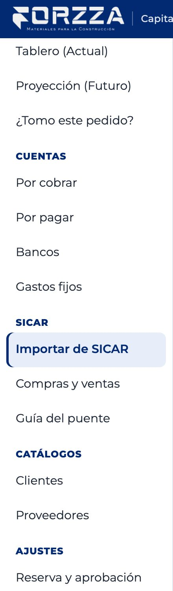
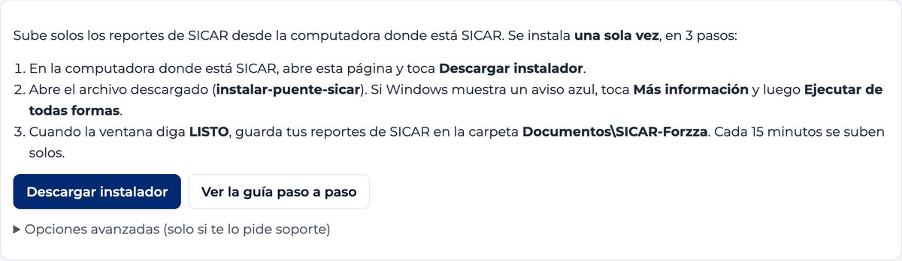
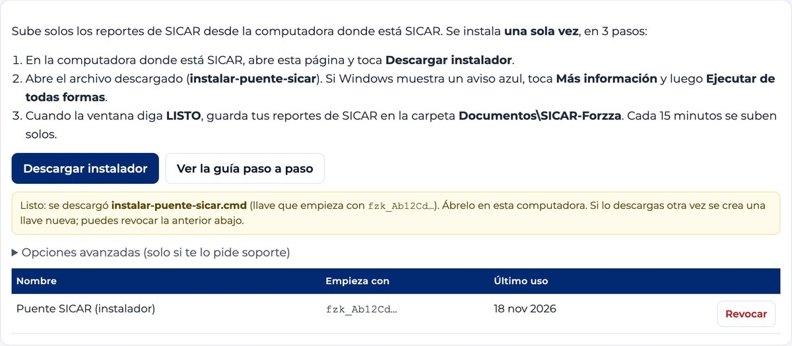
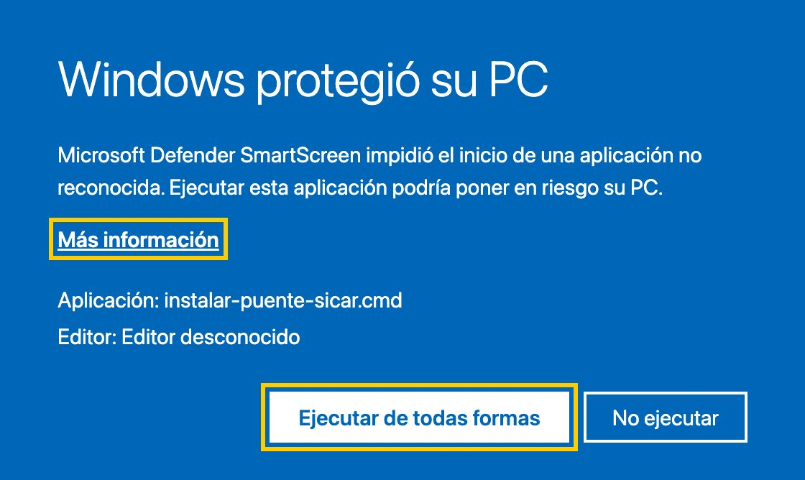
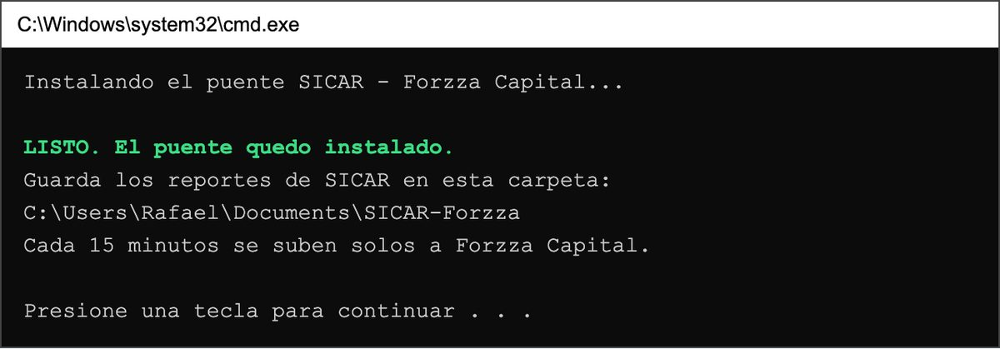
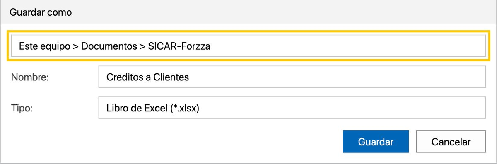
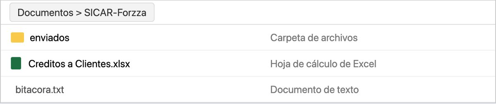
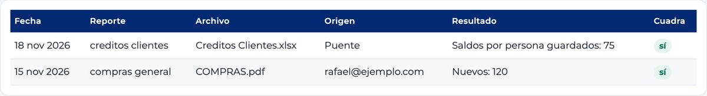

Cómo instalar el puente SICAR
El puente sube solos a Forzza Capital los reportes que guardes desde SICAR. Se instala una sola vez y toma unos 5 minutos. No necesitas saber de computadoras.
- Estar en la computadora donde está SICAR (con Windows).
- Entrar a Forzza Capital con una cuenta de director (por ejemplo, la de Rafael).
- Internet en esa computadora.
Entra a «Importar de SICAR»
En esa computadora abre Forzza Capital (aiagent.ringlypro.com/forzza/app) e inicia sesión. En el menú de la izquierda, bajo SICAR, toca Importar de SICAR.

Toca «Descargar instalador»
Baja hasta Puente automático y toca el botón azul Descargar instalador. Se descarga un archivo llamado instalar-puente-sicar.

Abajo aparece un aviso amarillo que dice que el archivo se descargó.

Abre el archivo descargado
Abre la carpeta Descargas (o toca el archivo en la barra de descargas del navegador) y haz doble clic en instalar-puente-sicar.
Windows puede mostrar un aviso azul que dice «Windows protegió su PC». Es normal: sale con cualquier archivo nuevo. Toca Más información y luego Ejecutar de todas formas.

Espera a que diga «LISTO»
Se abre una ventana negra por unos segundos. Cuando diga LISTO. El puente quedo instalado., presiona cualquier tecla para cerrarla. También se abre sola la carpeta SICAR-Forzza.

Si en lugar de LISTO dice NO se pudo instalar, toma una foto de esa ventana y mándala a Digit2AI.
Guarda tus reportes de SICAR en esa carpeta
Desde hoy, cada vez que quieras mandar información: en SICAR abre el reporte, toca Previa (F3) y guárdalo en Excel dentro de Documentos → SICAR-Forzza.

Los reportes que más nos sirven: Créditos a Clientes y Créditos de Proveedores, los dos con «Tipo: Sí» (así sale factura por factura).
Listo: en menos de 15 minutos se sube solo
El puente revisa la carpeta cada 15 minutos. Cuando sube un reporte, lo mueve a la carpeta enviados (para no subirlo dos veces) y aparece en Forzza Capital con origen Puente.


Preguntas comunes
¿Tengo que dejar la app abierta?
No. Solo la computadora encendida y con la sesión de Windows iniciada.
¿Se sube lo mismo dos veces?
No. Lo que ya se subió se mueve a «enviados», y la app reconoce un archivo que ya recibió.
Guardé un reporte y no aparece.
Espera 15 minutos. Si sigue sin aparecer, abre el archivo bitacora.txt dentro de SICAR-Forzza: ahí dice si hubo un error. Mándanos una foto.
¿Y si cambio de computadora?
Repite estos pasos en la nueva. En la app, en «Puente automático», toca Revocar en la llave anterior.
¿Es seguro?
El puente solo puede subir reportes a la cuenta de Forzza; no puede leer ni cambiar nada en la app. Si alguien obtiene el archivo, revoca la llave en la app y ya no sirve.